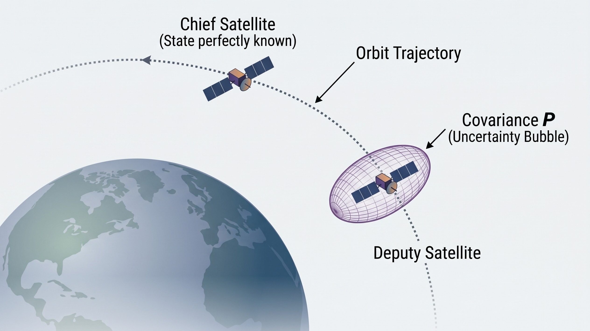

Why Linear Covariance Propagation Fails in Cartesian RIC
…and how Relative Orbital Elements fix it
Linear covariance propagation is a method for analyzing the evolution of uncertainty in a state vector over time. In this post, we will explore the importance of choosing the correct state representation for linear covariance propagation in environments involving relative spacecraft dynamics. Specifically, we will study two state representations: the first using Cartesian coordinates represented in the Radial, In-Track, Cross-Track (RIC) frame propagated with the Clohessy-Wiltshire (CW) linearized equations of motion, and the second taking an orbital parameterization approach using Relative Orbital Elements (ROEs).
We will compare these methods through a Monte Carlo simulation using a nonlinear two-body dynamics propagator. It is important to perform these kinds of studies to ensure spacecraft safety during close-proximity missions, as well as to assess long-term uncertainty growth.
Linear Covariance Propagation
Let’s look into how linear covariance propagation works and the benefits of using it. In state estimation, two important quantities are the mean, \(\mathbf{x}\), and the covariance, \(\mathbf{P}\). The covariance represents the uncertainty in the state estimate. Imagine a bell curve, representing a 1-dimensional distribution; the covariance reduces to variance and represents how “wide” the bell curve is, where a larger covariance correlates to a “wider” bell curve.
With this in mind, let’s look at a scenario involving two satellites in formation flight. Let’s call the satellite being followed the “Chief” and the following satellite the “Deputy”. In this scenario we will assume the state of the Chief satellite is perfectly known, while the Deputy has some covariance associated with its state estimate as seen in Figure 1.

As the two satellites progress in their orbits, the covariance can also be propagated forward to show the uncertainty in the Deputy’s state over time using linear covariance propagation. Equation 1 is the equation used for performing this propagation.
\[ \mathbf{P}(t) = \mathbf{\Phi}(t,t_0) \mathbf{P}_0 \mathbf{\Phi}(t,t_0)^T + \mathbf{Q} \tag{1}\]
In this equation \(\mathbf{\Phi}\) represents the state transition matrix, which uses linearized dynamics to propagate state deviations from \(t_0\) to \(t\). \(\mathbf{P}_0\) is the covariance at \(t_0\), and \(\mathbf{Q}\) represents process noise to account for unmodeled perturbations, though in our scenario this will be zero because we will be modeling the system using two-body equations of motion with with the only perturbation being gravity. Equation 1 will do a good job at propagating the covariance forward in time given that the uncertainty remains Gaussian and that the linearized dynamics contained in \(\mathbf{\Phi}\) accurately represent the true system dynamics. Linear covariance propagation saves time by eliminating the need for large Monte Carlo simulations to analyze the uncertainty bounds.
Coordinate Geometry
While Equation 1 stays the same, the STM \(\mathbf{\Phi}\) changes depending on the state representation we choose — as well as its ability to accurately capture the nonlinear dynamics present in orbit. As mentioned above, we will take two different state representations: a RIC framework framework using CW-equations and an orbital parameterization using ROEs.
Clohessy Wiltshire STM
To understand how \(\mathbf{\Phi}\) is formed using the CW-equations, we must first visit the RIC frame. This is because the CW equations are defined in the RIC frame, which is fixed to the Chief satellite. The radial unit vector is defined by Equation 2.
\[ \hat{R} = \frac{\mathbf{r_c}}{||\mathbf{r_c}||} \tag{2}\]
Where \(\mathbf{r}\) is the position vector of the satellite in the ECI frame, and the subscript c denotes the chief satellite. The Cross-Track unit vector is then defined in Equation 3.
\[ \hat{C} = \frac{\mathbf{r_c}\times\mathbf{v_c}}{||\mathbf{r_c}\times\mathbf{v_c}||} \tag{3}\]
Where \(\mathbf{v}\) is the satellites velocity vector in the ECI frame. With the Radial and Cross-Track directions defined, the In-Track direction is defined as
\[ \hat{I} = \hat{C} \times \hat{R} \tag{4}\]
By assuming that the Chief satellite is in a circular orbit, and that the distance between the Chief and Deputy is much smaller than the Chief’s orbital radius (\(||\delta \mathbf{r}|| << \mathbf{r}_c\)), Clohessy and Wiltshire formulated the following equations.1
The CW (Clohessy Wiltshire) equations assume the Chief satellite is in a circular orbit.
Relative Orbital Element STM
Simulation
Environment
Monte Carlo setup
Results
Why CW Framework Breaks Down
Takeaways
There
is
stuff
here
- Clohessy, W. H., & Wiltshire, R. S. (1960). Terminal Guidance System for Satellite Rendezvous. Journal of the Aerospace Sciences, 27(9), 653–658. https://doi.org/10.2514/8.8704
- Carpenter, J. R., & D’Souza, C. N. (2018). Navigation Filter Best Practices. NASA/TP-2018-219822.
- D’Amico, S. (2010). Autonomous Formation Flying in Low Earth Orbit. PhD Thesis, TU Delft.